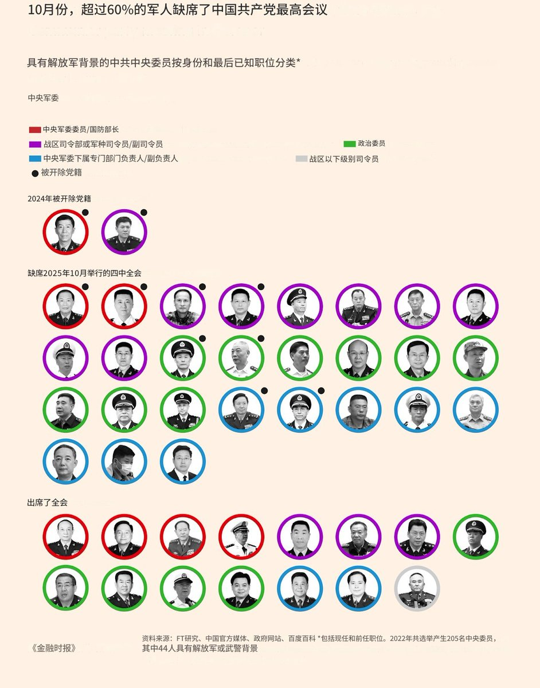

mycbxzd
@axzamyzed
@torontobigface 就是要打才要清洗，把不听自己话的都干掉

多伦多方脸
@torontobigface
感觉习近平真打不了台湾了
不仅是高层军队被清洗，在10月的中共二十届四中全会上
就有60%的高级干部缺席了会议
这次再加上张又侠派系，估计高层就不剩啥了
习近平是可以重建军队高层，但是这也是要好几年之后的事情了
而到了好几年之后，中国经济又会什么样呢？ https://t.co/ftgg7DnXyd